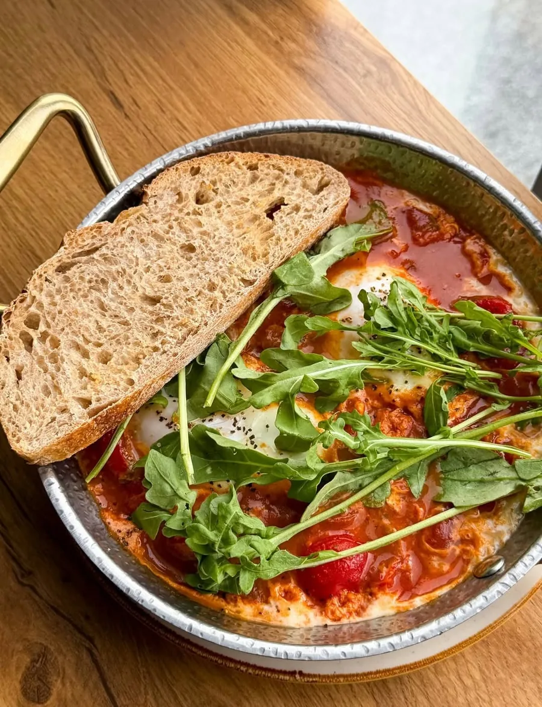
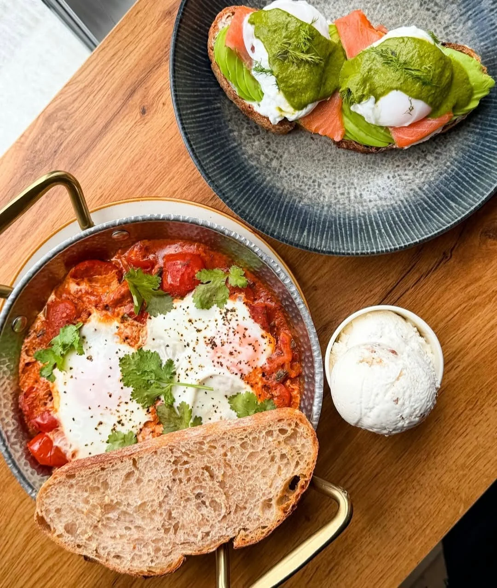
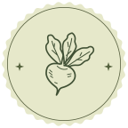
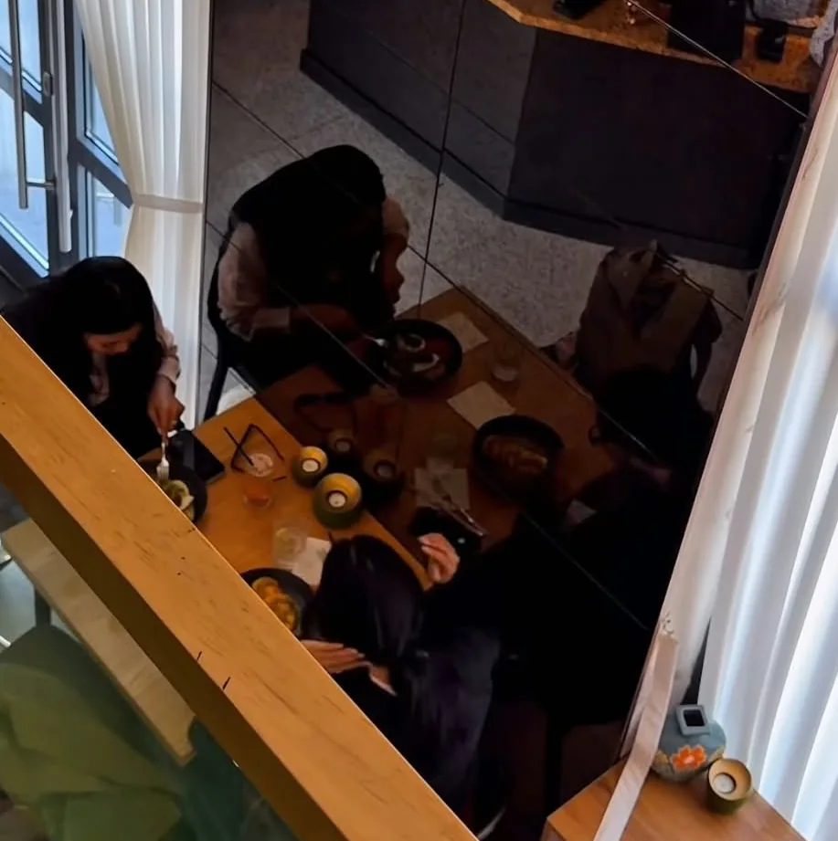

Бранч
Шакшука
Улаан лоолийн сүмсэнд болгосон өндөг, шинэхэн навчит ногоо, хөрөнгөт талх.
Халуун шакшука, тоор, өрөмтэй тост, аяга кофе. Улаанбаатарын өглөөг Roots-д яаралгүй эхлүүлээрэй.



Гэрлүг Вистагийн цонхны дэргэд тухлаад, халуун бранчаа амтлаарай. Нэг зүсэм тостоо хувааж, яриа өрнүүлэнгээ дахин нэг аяга кофе уухад энд цаг бий.
@roots_ubТоор, өрөмтэй тост надад хамгийн их таалагдсан.
Shreya ShahGoogle · Орчуулсан
Бранч08:00 – 16:00
Оройн хоол18:00 – 23:00